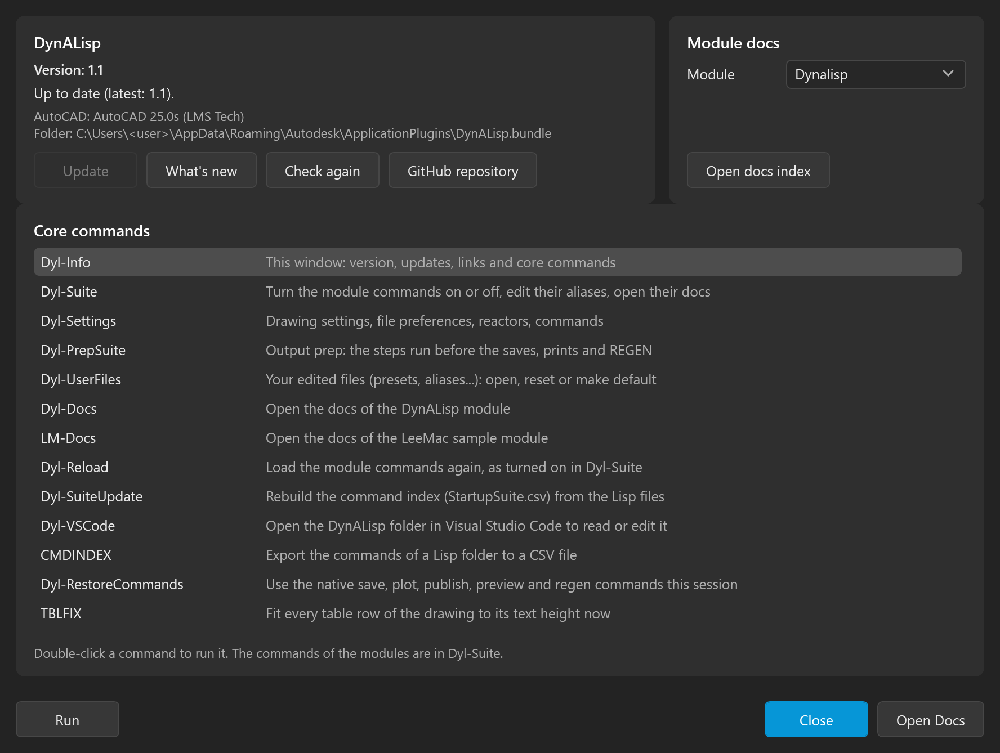
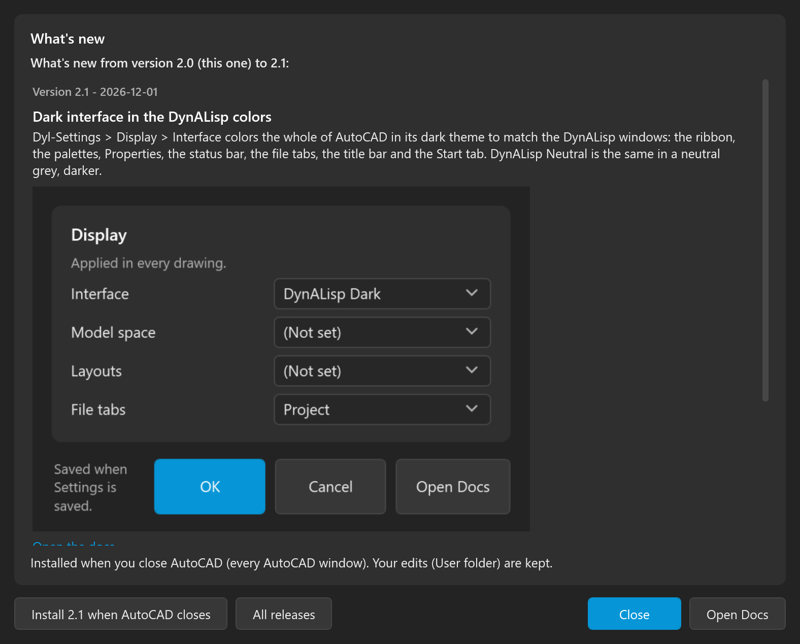

Info et fichiers utilisateur
| Syntaxe | DYL-INFO, DYL-USERFILES |
| Requis | AutoCAD 2025 ou plus récent pour Windows |
| Licence | Licence publique générale GNU v3 |
Description
Dyl-Info montre votre version de DynALisp, ses mises à jour et ses docs. Dyl-UserFiles garde la trace de ce que vous avez modifié : préréglages, alias, clés de calque.

Utilisation
- Tapez Dyl-Info.
- Quand une nouvelle version est sortie, cliquez Update to.... Elle s'installe à la fermeture d'AutoCAD.
- Tapez Dyl-UserFiles pour réinitialiser, exporter ou importer vos modifications.
Fenêtre Info
- DynALisp – votre version et s'il en existe une nouvelle. What's new montre ce qu'apporte chaque version.
- Module docs – ouvre les docs d'un module.
- Core commands – double-cliquez une commande pour la lancer.
| Commande | Ce qu'elle fait |
|---|---|
| Dyl-Info | Cette fenêtre. |
| Dyl-Suite | Active ou désactive les commandes et leur donne des noms courts (Startup Suite). |
| Dyl-Settings | Ce que DynALisp fait dans chaque dessin (Paramètres). |
| Dyl-PrepSuite | Le nettoyage fait avant l'enregistrement ou le traçage (Prep Drawing). |
| Dyl-UserFiles | Vos modifications : les réinitialiser, les exporter ou les importer (plus bas). |
| Dyl-Docs | Ouvre le site des docs. LM-Docs ouvre les docs des programmes de Lee Mac. |
| Dyl-Reload | Recharge les commandes. |
| Dyl-SuiteUpdate | Met à jour la liste des commandes. |
| Dyl-VSCode | Ouvre DynALisp dans Visual Studio Code, pour lire ou modifier les programmes. |
| CMDINDEX | Liste les commandes d'un dossier de programmes dans un fichier de tableur. |
| Dyl-RestoreCommands | Utilise les commandes habituelles d'enregistrement et de traçage d'AutoCAD pour cette session (Command Optimizer). |
| TBLFIX | Ajuste chaque rangée de tableau à son texte. |
Mises à jour
Update to… montre les nouveautés, puis installe la nouvelle version à la fermeture d'AutoCAD. Vos modifications sont gardées. Avec Install updates automatically dans les Paramètres, DynALisp s'en charge pour vous.
Après une mise à jour, la fenêtre What's New montre ce que vous pouvez faire de nouveau, avec un lien vers les docs.

Fichiers utilisateur
Ce que vous modifiez dans DynALisp est gardé à part : une mise à jour ne le perd jamais. Dyl-UserFiles le liste :

- Open – ouvre le fichier choisi.
- Reset to default – abandonne vos modifications de ce fichier.
- Make it the default – votre version devient celle livrée avec DynALisp.
- Export settings… – enregistre vos réglages et modifications dans un dossier, pour les garder ou les passer à un autre ordinateur.
- Import settings… – les ramène. Redémarrez AutoCAD ensuite.
Désinstallation
Désinstallez DynALisp depuis Paramètres Windows > Applications. Il propose d'abord d'enregistrer vos réglages, puis retire DynALisp. Le programme d'installation peut ramener les réglages enregistrés.